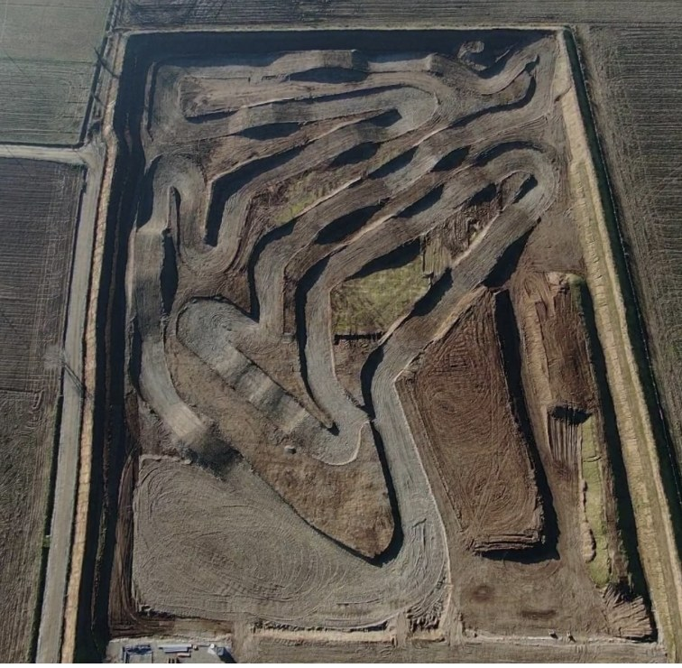

Covo · Bassa Bergamasca
La pista
Un tracciato in terra ripassato con trattore e livellatrice prima di ogni apertura.

PartenzaScheda tecnica
Il tracciato
- FondoTerra dura
- Lunghezza1560 m
- Pista bambiniSì
- Paddock13.000 m²
- Corrente paddock230 / 380V
- Allenamento liberoSì
- OmologazioneFMI · UISP · ASI · CSEN
- ManutenzioneA ogni apertura
Cosa si fa qui
Scegli il tuo turno
Motocross
Allenamento libero
Da martedì a domenica, dalle 9 alle 17, per amatori ed esperti.
Minicross
Pista bambini
Una pista dedicata ai più piccoli, senza le moto grandi.
Gare
4 enti
Omologata FMI, UISP, ASI e CSEN. Nei giorni di gara il libero è sospeso.